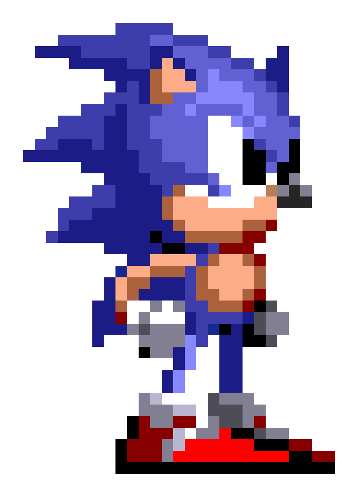

The Beginning (Early 90s)
In the late 1980s, Sega was determined to create a mascot that could rival the overwhelming popularity of Nintendo's Mario and help define the identity of their Genesis/Mega Drive console. The company launched an internal competition among its development teams to design a new character that would be fast, memorable, and marketable. After numerous proposals—including a rabbit with stretchy ears and a tough-looking armadillo—Naoto Ohshima's concept of a blue hedgehog stood out. Inspired by a mix of classic American animation and edgy 90s attitude, the character was designed to reflect speed, rebellion, and coolness, appealing to a younger, edgier audience. Originally nicknamed Mr. Needlemouse. The concept evolved both visually and conceptually, with Sonic's blue color matching Sega's logo and his red shoes drawing inspiration from Michael Jackson's Bad album cover and Santa Claus' bright color palette. Sonic's sleek design and signature attitude were a perfect contrast to Mario's cheerful plumber persona. With gameplay shaped by Yuji Naka's programming expertise—focusing on speed, momentum, and smooth scrolling—Sonic the Hedgehog was officially born, marking the beginning of one of gaming's most iconic franchises.
Programmer Yuji Naka was instrumental in developing the technology that allowed Sonic to move at incredible speeds, a key feature that differentiated the game from competitors on the Sega Genesis (Mega Drive). The first game, Sonic the Hedgehog, launched in 1991 to critical acclaim.

Key Milestones
- 1991: Sonic the Hedgehog is released on the Sega Genesis, instantly becoming a cultural icon and Sega's mascot. The game's speed-focused gameplay sets it apart from other platformers of the era.
- 1992: Sonic the Hedgehog 2 introduces Miles 'Tails' Prower, Sonic's loyal fox sidekick, as well as the revolutionary Spin Dash move, which becomes a signature mechanic in the series.
- 1994: Sonic & Knuckles introduces Knuckles the Echidna and features “lock-on technology,” allowing players to combine it with Sonic 3 for a larger, interconnected experience. This technical innovation becomes a standout in cartridge-based gaming.
- 1998: Sonic Adventure is released on the Sega Dreamcast, marking Sonic's full transition to 3D gameplay. The game features voice acting, open-world exploration, and multiple playable characters.
- 2001: Following financial struggles, Sega discontinues the Dreamcast and exits the console hardware business. Sonic games begin releasing on competing platforms such as PlayStation, Xbox, and Nintendo consoles, starting a new era for the franchise.
- 2006: A reboot simply titled Sonic the Hedgehog is released for the Xbox 360 and PlayStation 3, but it is met with criticism due to bugs and rushed development—marking a low point in the franchise's reputation.
- 2010: Sonic experiences a mix of highs and lows. Titles like Sonic Generations and Sonic Mania are praised for celebrating the franchise's legacy, while others like Sonic Forces receive mixed reviews. The era also includes popular mobile titles and the release of several retro collections.
- 2020: The first live-action Sonic the Hedgehog film is released, exceeding box office expectations and winning over fans with a redesigned Sonic and a comedic performance by Jim Carrey as Dr. Robotnik.
- 2020: New entries like Sonic Frontiers push the series into open-world gameplay, while Sonic continues to thrive through multimedia content including shows like Sonic Prime
- 2022: Sonic the Hedgehog 2 movie debuts, introducing Tails and Knuckles to the big screen and setting the stage for an expanded cinematic universe and a third live-action movie in development.